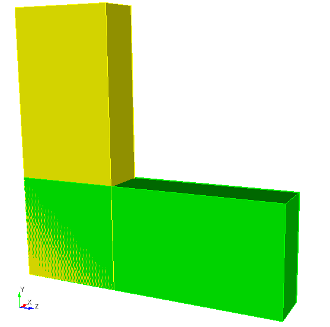
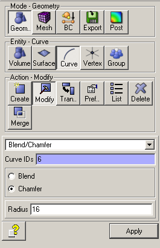
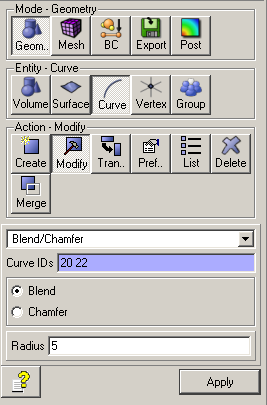
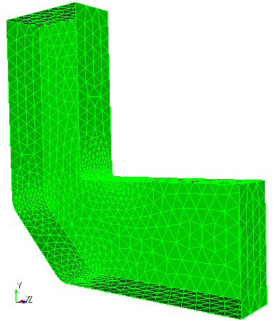
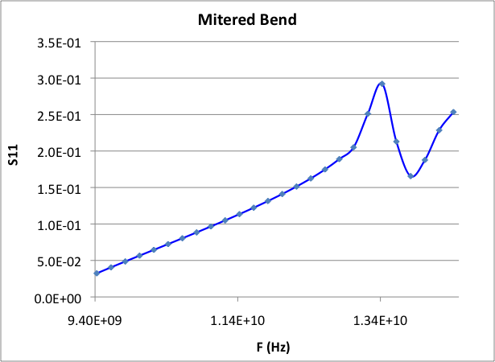
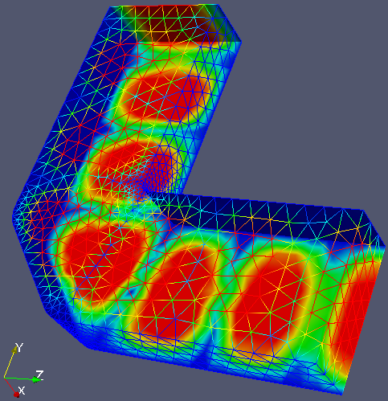
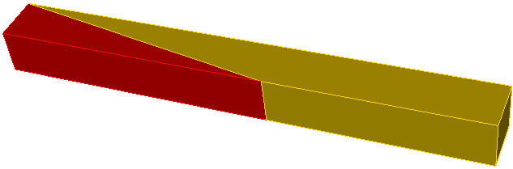
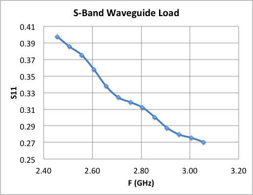
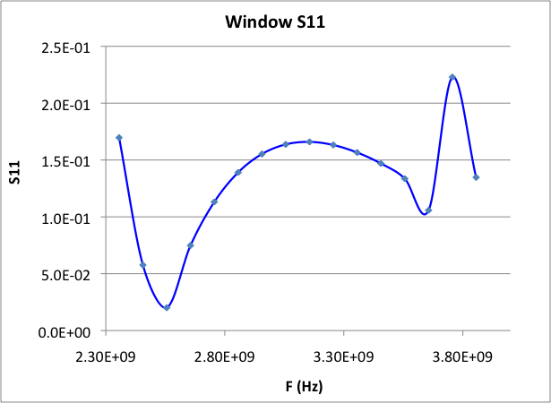
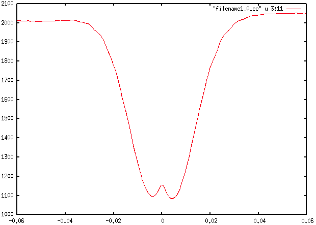

S3P tutorials¶
Three worked examples from examples/s3p. Each follows the standard workflow: Cubit journal, mesh export, acdtool meshconvert, solve, plot. The Cubit and acdtool mechanics are covered in the Omega3P pillbox tutorial and are not repeated here.
Tutorial 1: X-band mitered bend¶
Example directory: examples/s3p/90DegreeBend
A 90 degree H-plane bend in WR90 waveguide with a chamfered outer corner. The chamfer is what makes the bend low-reflection; this tutorial computes how well it works across the band.
| Parameter | Value |
|---|---|
| Waveguide | WR90, 22.86 mm by 10.16 mm |
| Arm length | 60 mm each |
| Corner chamfer | 16 mm |
| Edge rounding | 1 mm on the inner corner, 5 mm on the chamfer edges |
| TE10 cutoff | 6.557 GHz |
Build the model¶
The journal builds two bricks, unites them, chamfers the outer corner, and rounds the edges. Dimensions are parameterized at the top.
reset
#{wgwidth = 22.86}
#{wghight = 10.16}
#{wglength = 60.0}
#{cornercut = 16}
#{rcorner1 = 1}
#{rcorner2 = 5}
brick x {wghight} y {wgwidth} z {wglength}
move volume 1 location 0 0 {0.5*wglength-0.5*wgwidth}
brick x {wghight} y {wglength} z {wgwidth}
move volume 2 location 0 {0.5*wglength-0.5*wgwidth} 0
unite all
compress ids
modify curve 6 chamfer radius {cornercut}
modify curve 12 blend radius {rcorner1}
modify curve 20 22 blend radius {rcorner2}
export acis "90DegreeBend.sat" overwrite



Model after uniting the bricks, after the chamfer, and after the edge rounding.
Curve IDs change
The curve numbers in modify curve depend on how Cubit numbered the geometry after unite and compress ids. If you change dimensions or build order, check the IDs interactively in Cubit before running the chamfer and blend commands.
Mesh¶
Copy a meshing journal from an earlier example and adjust the sideset assignments. The two open ends become ports 7 and 8.
reset
import acis "90DegreeBend.sat"
volume all scheme Tetmesh
volume all sizing function type skeleton scale 5 time_accuracy_level 2 min_size auto max_size 3 max_gradient 1.2
mesh volume all
Sideset 7 surface 10 # port 1
Sideset 8 surface 12 # port 2
Sideset 6 surface all except 10 12
block 1 volume all
block 1 element type tetra10
volume all scale 0.001
export Genesis "90DegreeBend.gen" block all overwrite

The skeleton sizing function refines the mesh around the rounded edges.
Convert with acdtool meshconvert 90DegreeBend.gen and confirm boundary IDs 6, 7, and 8 in the statistics.
Input¶
ModelInfo: {
File: ./90DegreeBend.ncdf
BoundaryCondition: {
Exterior: 6
Waveguide: 7, 8
}
}
FiniteElement: {
Order: 2
CurvedSurfaces: on
}
FrequencyScan: {
Start: 9.424e+9
End: 12.424e+9
Interval: 0.25e+9
}
PostProcess: {
Toggle: on
PortNumber: 7
}
Port: {
ReferenceNumber: 7
NumberOfModes: 2
}
Port: {
ReferenceNumber: 8
NumberOfModes: 2
}
No SurfaceMaterial block is given, so the walls are treated as lossless. Two modes are loaded per port. Only TE10 propagates below 13.1 GHz, so the second mode is evanescent across the scan and is included to absorb near-port field distortion.
Run and plot¶
Thirteen frequency points with 16 ranks take a few minutes. The result is s3p_results/Reflection.out. Column 2 is \(|S_{11}|\) for TE10.

Reflection versus frequency over an extended 9.4 to 14.4 GHz scan. The bend is well matched at the low end and degrades toward the TE20 cutoff at 13.1 GHz, where the resonance appears.
In ParaView, load 90DegreeBend.ncdf with any s3p.port7.mode0.*.mod file through the SLAC toolbar to see the standing-wave pattern of the field at that frequency.

Hands-on¶
Change cornercut and rerun. Plot several chamfer sizes on one graph to find the value that minimizes reflection at 11.424 GHz.
Tutorial 2: waveguide load¶
Example directory: examples/s3p/recWG-load1
A matched load for WR284 waveguide: a wedge of lossy dielectric that tapers in over 200 mm. This is a one-port problem whose only output of interest is \(|S_{11}|\), and it introduces multi-volume meshing with a lossy material.

| Parameter | Value |
|---|---|
| Waveguide | WR284, 72.136 mm by 34.036 mm |
| Load length | 200 mm, tapered |
| Vacuum section | 150 mm, port at the end |
| Load material | εr = 10, εr'' = -1.52 |
| Symmetry | Half model, magnetic plane |
Build and mesh¶
The journal makes the load brick, cuts it diagonally to form the wedge, and attaches the vacuum section. The two volumes are imprinted and merged so the wedge face is one shared surface.
reset
import acis "recWG-load1.sat"
imprint body 1 2
merge body 1 2
volume all scheme tetmesh
surface all scheme triadvance
volume 1 size 8.0
volume 2 size 8.0
surface 1 size 8.0 # interface surface
surface 1 interval hard
mesh volume 1
mesh volume 2
smooth vol all
smooth surface all
sideset 1 surface 5 7 # symmetry plane
sideset 7 surface 6 # port
sideset 6 surface all except 5 7 6 1
block 1 vol 2 # vacuum
block 2 vol 1 # load
block all element type tetra10
transform mesh output scale 0.001
export genesis "recWG-load1.gen" overwrite
Note surface 1 interval hard, which fixes the mesh on the shared interface before either volume is meshed so both sides agree.
Input¶
ModelInfo: {
File: ./recWG-load1.ncdf
BoundaryCondition: {
Magnetic: 1
Exterior: 6
Waveguide: 7
}
Material : {
Attribute: 1
Epsilon: 1.0
Mu: 1.0
}
Material : {
Attribute: 2
Epsilon: 10.0
Mu: 1.0
EpsilonImag: -1.52
}
SurfaceMaterial: {
ReferenceNumber: 6
Sigma: 5.8e7
}
}
FiniteElement: {
Order: 2
CurvedSurfaces: on
}
FrequencyScan: {
Start: 2.556e+9
End: 3.156e+9
Interval: 0.05e+9
}
PostProcess: {
Toggle: on
PortNumber: 7
}
Port: {
ReferenceNumber: 7
NumberOfModes: 2
}
The material blocks are the same as in the Omega3P lossy load tutorial. Block attribute 2 is the wedge, with a negative imaginary permittivity for loss.
Result¶

Reflection stays below about 0.05, or -26 dB, across the scan. A longer taper or a lower-permittivity material improves it further.
Tutorial 3: RF window¶
Example directory: examples/s3p/window
A ceramic disk, 3 mm thick, sits inside a short pillbox cavity between two WR284 waveguides. This is the geometry of a vacuum window. The tutorial adds a quarter-symmetry model with three volumes, a dielectric without loss, and field extraction along the axis through acdtool.
| Parameter | Value |
|---|---|
| Waveguide | WR284, 72.136 mm by 34.163 mm, 60 mm each side |
| Pillbox radius | 45 mm |
| Pillbox half-length | 15 mm each side of the window |
| Window thickness | 3 mm |
| Window material | εr = 9.37, alumina |
| Symmetry | Quarter model, one magnetic and one electric plane |
Build and mesh¶
The journal unites a brick and a cylinder, cuts the window slab out with two z-plane webcuts, then cuts to a quarter model. Three volumes result: vacuum on each side and the ceramic in the middle. Meshing uses Cubit groups to collect surfaces for the sidesets, which is more robust than listing surface IDs by hand when there are many of them:
merge tolerance 0.0001
imprint body all
merge body all
volume 1 3 sizing function type skeleton scale 5 time_accuracy_level 2 min_size auto max_size 6 max_gradient 1.2
volume 2 sizing function type skeleton scale 3 time_accuracy_level 2 min_size 1.5 max_size 3 max_gradient 1.2
group 'ms' add surface with Is_merged # the two window faces
ms expand size 2
ms expand interval hard
mesh volume all
smooth vol all
smooth surface all
group "port7" add surface 16
group "port8" add surface 2
group "sym1" add surface 5 11 17
group "sym2" add surface 1 9 14
group "ss6" add surface all
ss6 subtract ms from ss6
ss6 subtract sym1 from ss6
ss6 subtract sym2 from ss6
ss6 subtract port7 from ss6
ss6 subtract port8 from ss6
sideset 1 surface in sym1
sideset 2 surface in sym2
sideset 7 surface in port7
sideset 8 surface in port8
sideset 6 surface in ss6
block 1 vol 1 3 # vacuum
block 2 vol 2 # ceramic
block all element type tetra10
transform mesh output scale 0.001
export genesis "window.gen" overwrite
The thin ceramic volume gets a finer sizing function so there are several elements through its thickness. The group ms holds the merged interface surfaces and is excluded from the exterior sideset, since an interior surface must not carry a boundary condition.
Input¶
ModelInfo: {
File: ./window.ncdf
BoundaryCondition: {
Magnetic: 1
Electric: 2
Exterior: 6
Waveguide: 7, 8
}
Material : {
Attribute: 1
Epsilon: 1.0
Mu: 1.0
}
Material : {
Attribute: 2
Epsilon: 9.37
Mu: 1.0
}
SurfaceMaterial: {
ReferenceNumber: 6
Sigma: 5.8e7
}
}
FiniteElement: {
Order: 2
CurvedSurfaces: on
}
FrequencyScan: {
Start: 2.356e9
End: 3.856e9
Interval: 0.1e+9
}
The quarter model uses one magnetic and one electric symmetry plane, which is the correct pair for the TE10 mode of the rectangular guide. Without Port blocks, S3P loads one mode per waveguide surface, which is right for a single-moded guide.
Result¶

The window is matched near 2.55 GHz. The second dip and sharp peak above 3.6 GHz come from a pillbox resonance.
Field along the axis with acdtool¶
For a window, the field in the ceramic matters as much as the match. Extract it along the beam axis with acdtool postprocess rf using an .rfpost file that points at the S3P results. FreqScanID selects the frequency point, counting from zero, so index 2 is 2.556 GHz.
RFField
{
ResultDir = s3p_results
FreqScanID = 2 // third scan point: 2.556 GHz
ModeID = 0
xsymmetry = magnetic
ysymmetry = magnetic
gradient = -1
cavityBeta = 1.0
reversePowerFlow = 0
x0 = 0.0
y0 = 0.0
gz1 = -0.035
gz2 = 0.035
npoint = 300
fmnx = 10
fmny = 10
fmnz = 50
}
ALLFieldOnLine
{
ionoff = 1
modeID1 = -1
modeID2 = -1
npoint = 300
filename = field1
rfphase = 0.0
x1 = 0.0
x2 = 0.0
y1 = 0.001
y2 = 0.001
z1 = 1e8 // 1e8: full extent of the model
z2 = 1e8
}
This writes field1_0.ec for the first port mode, a table of position and complex E-field components with amplitudes and phases:
# 1 2 3 4 5 6 7 8 9 10 11 12 13 14 15 16
# x y z Ex_r Ex_i Ey_r Ey_i Ez_r Ez_i Ex_a Ey_a Ez_a Ex_phase Ey_phase Ez_phase E_amp
Plot column 11, the Ey amplitude, against column 3:

The field drops inside the ceramic, centered at z = 0, by roughly the ratio of the permittivities, and the small central bump is the standing wave across the 3 mm slab.
The same quantity is visible in ParaView by loading the mesh with the .mod file for the chosen frequency and using the SLAC toolbar line plot along the axis.